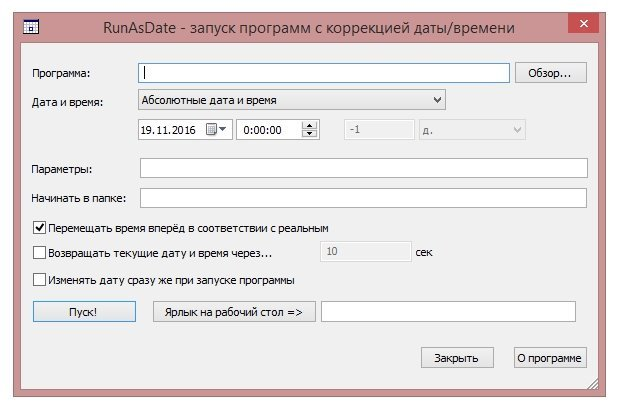

і R
і R
Диск-Х - програма, яка дозволяє підключити хмарні сховища як жорсткі диски на комп'ютерах Windows. В даний момент підтримуються Хмара Mail.Ru, Яндекс.Діск, Dropbox і Google Drive
| Ліцензія: | Безкоштовно (1 аккаунт Dropbox) |
і R
RunAsDate це дуже корисна програма за допомогою якої, тріальний період платних програм можна зробити нескінченним. Це відбувається за рахунок підміни дати установки платної програми, тобто якщо Ви наприклад, встановили певну програму 1 січня 2016 року і отримали пробний період до 30 січня 2016 року.
Те за рахунок RunAsDate можна підмінити дату установки, наприклад на пів року тому, переконати платну програму, що вона була має 1 червня 2015 року. Таким чином чином Ви отримаєте тріал на пів року. Дату установки можна відкотити і на 5 років назад, відповідно отримавши пробний період на 5 років.

Завантажити RunAsDate (36 Kб):
для 64-bit OC:
Для 32-bit ОС: